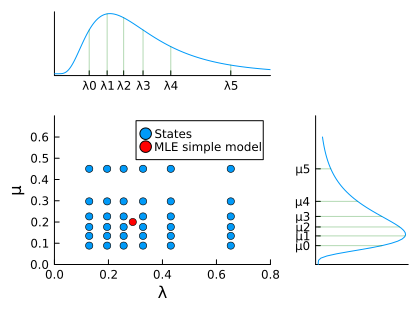

Extended rate analysis
In this vignette, we will do the same as in the simple analysis, but we explain how the model is set up in more detail.
Tree file
First, we load the necessary modules and read in the tree file. We assume that we know the total number of extant species, and using that we can calculate the sampling fraction.
using Pesto
phy = readtree(Pesto.path("primates.tre"))
sampling_fraction = 0.635
primates = SSEdata(phy, sampling_fraction)Model choice
Next, we set up the SSE model, including its dimensionality and hyperparameters. For this model, we will draw the speciation rate (λ) and extinction rate (µ) from LogNormal distributions. We pick the median of the LogNormal distributions such that they correspond to the maximum-likelihood estimates of the constant-rate birth-death model. This is also called the "empirical Bayes" approach, where we use the data twice. We pick the log-sd as H = 0.587, which corresponds to a LogNormal distribution whose 2.5%-97.5% quantile spans one order of magnitude.
λml, μml = estimate_constant_bdp(primates)
H = 0.587
n = 6
using Distributions
dλ = LogNormal(log(λml), H)
dμ = LogNormal(log(µml), H)
λquantiles = make_quantiles(dλ, n)
µquantiles = make_quantiles(dμ, n)
λ, μ = allpairwise(λquantiles, µquantiles)The scatter plot of λ on the x-axis, and µ on the y-axis looks like the figure below (blue dots), with the quantiles of the LogNormal distributions on the margin.

Next, we estimate the rate shift parameter η under the SSE model, conditional on λ and µ.
η = optimize_eta(λ, µ, primates)0.0033108981220566925The units of $\eta$ are number of rate shift events per lineage per time. The product of the tree length (the sum of all branch lengths) times $\eta$ will give us the number of expected rate shifts under the prior:
sum(primates.branch_lengths) * η5.788213930273049This allows us to set up the SSE model object:
model = SSEconstant(λ, μ, η)With the model and data objects we can for example calculate the log likelihood
logL_root(model, primates)-687.9244640496547Branch rates and shifts
Or we can compute both the postorder and preorder pass, and get the expected speciation and extinction rates per branch. The result is a data frame object, and we print the first five rows:
rates = birth_death_shift(model, primates)
rates[1:5,:]| Row | mean_lambda | mean_mu | mean_netdiv | mean_relext | std_lambda | std_mu | std_netdiv | std_relext | delta_lambda | delta_mu | delta_netdiv | delta_relext | node | edge | nshift | shift_bf | shift_bf_log |
|---|---|---|---|---|---|---|---|---|---|---|---|---|---|---|---|---|---|
| Float64 | Float64 | Float64 | Float64 | Float64 | Float64 | Float64 | Float64 | Float64 | Float64 | Float64 | Float64 | Int64 | Int64 | Float64 | Float64 | Float64 | |
| 1 | 0.219674 | 0.137233 | 0.0824417 | 0.614621 | 0.0305811 | 0.04373 | 0.0234876 | 0.130417 | -0.000269661 | -0.000376746 | 0.000107085 | -0.000749175 | 235 | 1 | 0.00656315 | 0.144899 | -0.838933 |
| 2 | 0.219821 | 0.137151 | 0.0826702 | 0.613973 | 0.0309355 | 0.0437228 | 0.0236953 | 0.130478 | 0.000750593 | 9.25168e-5 | 0.000658076 | -0.0015284 | 236 | 2 | 0.0200715 | 0.182188 | -0.739481 |
| 3 | 0.221556 | 0.137215 | 0.0843407 | 0.610393 | 0.0344918 | 0.0442977 | 0.0267084 | 0.131706 | 0.00324681 | 0.000146539 | 0.00310027 | -0.00601486 | 237 | 3 | 0.0298153 | 0.720138 | -0.142584 |
| 4 | 0.224177 | 0.137536 | 0.0866417 | 0.606665 | 0.0410088 | 0.0454113 | 0.0328797 | 0.135543 | 0.00152272 | 0.000592672 | 0.000930051 | -8.00437e-5 | 238 | 4 | 0.0108047 | 0.666096 | -0.176463 |
| 5 | 0.225484 | 0.138265 | 0.0872182 | 0.607951 | 0.0459509 | 0.047183 | 0.0383075 | 0.147207 | 0.000992493 | 0.00093374 | 5.87535e-5 | 0.00310102 | 1 | 5 | 0.009829 | 0.812969 | -0.0899263 |
Tree plots
As before, we can use Makie to make some quick tree plots. Here we are plotting the average net-diversification rate per branch, with a two-color scheme going from black to green.
using Makie, CairoMakie
cmap = Makie.cgrad([:black, :green])
treeplot(primates, rates, "mean_netdiv"; cmap = cmap)